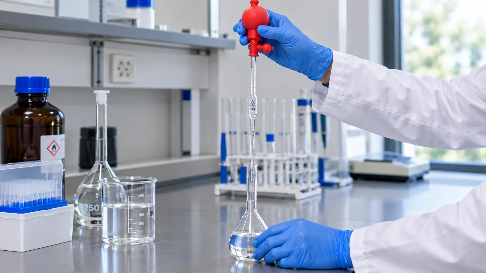

Química básica
Fórmula de dilución C1V1 = C2V2: qué es, cómo se usa y ejemplos
La fórmula C1V1 = C2V2 indica qué volumen de una solución concentrada hay que tomar para preparar otra más diluida. Con ella se resuelven a diario estándares de calibración, reactivos de trabajo y diluciones de muestras.

La fórmula de dilución C1V1 = C2V2 dice qué volumen V1 de solución concentrada hay que tomar para obtener un volumen final V2 de concentración C2: V1 = C2·V2/C1. Por ejemplo, para 100 mL de un estándar de 10 mg/L a partir de uno de 1000 mg/L se toma 1 mL y se afora a 100 mL. Puedes calcular V1 con la calculadora de diluciones C1V1 = C2V2.
Qué es la fórmula de dilución y cuándo se aplica
Al diluir una solución solo se añade disolvente (solvente, en buena parte de Latinoamérica): la cantidad de soluto no cambia. Si la concentración está en mol/L, lo que se conserva son los moles; si está en g/L, mg/L o % p/v, se conserva la masa. Como cantidad = concentración × volumen, la cantidad antes y después de diluir es la misma, y de ahí sale la igualdad C1V1 = C2V2.
Se usa para preparar reactivos de trabajo a partir de soluciones madre o soluciones patrón, estándares de calibración y diluciones de muestras. Se aplica siempre que no haya reacción química y que V2 sea el volumen final de la solución medido en un matraz aforado, no la suma del volumen tomado más el agua añadida: los volúmenes no siempre son aditivos.
La fórmula C1V1 = C2V2 y sus variables
donde C1 = concentración de la solución madre; V1 = volumen que se toma de ella; C2 = concentración deseada; V2 = volumen final de la solución diluida
Cualquiera de las cuatro variables se puede despejar si se conocen las otras tres. La exactitud del resultado no la da la fórmula, sino el material volumétrico con el que se miden V1 y V2 y, si la solución se usa como titulante, su estandarización posterior.
Unidades: qué se puede mezclar y qué no
C1 y C2 tienen que estar en la misma unidad, y V1 y V2 también (los dos en mL o los dos en L). Las concentraciones válidas son las que se expresan por volumen de solución: mol/L (ver qué es la molaridad), g/L, mg/L o % p/v. Las ppm sirven cuando equivalen a mg/L, es decir, en soluciones acuosas diluidas (ver qué son las ppm y cómo convertirlas).
Si C1 está en mol/L y C2 se necesita en mg/L, hay que convertir antes con la masa molar; para eso sirve el conversor de mol/L a mg/L. Mezclar unidades sin convertir es uno de los errores más frecuentes.
La fórmula no sirve con el % p/p de un reactivo concentrado, porque la densidad cambia al diluir. Por ejemplo, 10 mL de HCl al 37 % (d = 1,19 g/mL) llevados a 100 mL dan en realidad ≈ 4,3 % p/p, mientras que C1V1/V2 daría 3,7 %. En ese caso primero se pasa el porcentaje a molaridad con la densidad, como explica cómo preparar HCl 1 M desde HCl al 37 %, o se usa la calculadora de dilución desde reactivo comercial.
Ejemplos resueltos
Datos: C1 = 1000 mg/L · C2 = 10,0 mg/L · V2 = 100,0 mL
V1 = (10,0 mg/L × 100,0 mL) / 1000 mg/L = 1,00 mL
Se toma 1,00 mL del patrón con una pipeta aforada de 1 mL, se pasa a un matraz aforado de 100 mL y se completa con agua destilada hasta la marca. El factor de dilución es 100.
V1 = (0,100 M × 500,0 mL) / 1,00 M = 50,0 mL
Se miden 50,0 mL con una pipeta aforada de 50 mL y se llevan a 500 mL con agua destilada recién hervida (sin CO2). El 0,100 M es nominal: el NaOH absorbe CO2 del aire y no es patrón primario, así que la solución se valora, por ejemplo con unos 0,41 g de biftalato de potasio secado a 110 °C (pesado con precisión de 0,1 mg) y fenolftaleína. Se guarda en un frasco de plástico, porque el NaOH ataca el vidrio y traba los tapones esmerilados.
Se toman 5,00 mL de una solución 0,500 M y se llevan a 250,0 mL.
C2 = (C1 × V1) / V2 = (0,500 M × 5,00 mL) / 250,0 mL = 0,0100 M
El factor de dilución es 250,0 / 5,00 = 50.
Cualquiera de estos resultados se puede comprobar con la calculadora de diluciones.
Factor de dilución y notación 1:10
El factor de dilución (FD) indica cuántas veces se diluye la solución: FD = V2/V1 = C1/C2. Una dilución 1:10 significa, en la notación más habitual, 1 parte llevada a 10 partes de volumen final (10 mL a 100 mL), lo que equivale a «1 + 9» y a un factor 10. Algunos laboratorios usan «1:10» para 1 parte más 10 de disolvente (factor 11), así que conviene indicar siempre la convención.
En diluciones sucesivas los factores se multiplican: dos diluciones 1:10 seguidas dan un factor 100. Para series de estándares o de muestras microbiológicas se puede usar la calculadora de diluciones seriadas.
Errores comunes al diluir una solución
1. Usar el volumen de agua en lugar del volumen final
V2 es el volumen final de la solución, no el agua que se agrega. Para 100 mL de solución no se suman 99 mL de agua a 1 mL de patrón: se lleva el patrón a un matraz de 100 mL y se completa hasta la marca.
2. Mezclar unidades
Poner C1 en mol/L y C2 en mg/L, o V1 en mL y V2 en L, da resultados equivocados en factores de 1000 o más. Antes de despejar, todo debe estar en la misma unidad.
3. Diluir mucho en un solo paso con volúmenes pequeños
Con material clase A, el ejemplo 1 (pipeta de 1 mL y matraz de 100 mL) tiene una incertidumbre relativa aproximada del 0,5 % solo por el material volumétrico, mientras que el ejemplo 2 (pipeta de 50 mL y matraz de 500 mL) queda en torno al 0,06 %. Ese mismo factor 100 hecho en dos pasos de 10 mL a 100 mL baja a ≈ 0,18 %. Para cuantificar la incertidumbre de una preparación concreta se puede usar la calculadora de incertidumbre.
4. Aforar con la solución caliente o sin homogeneizar
Los matraces aforados están calibrados a 20 °C (ISO 1042). Si la dilución libera calor, como ocurre con los ácidos concentrados y sobre todo con el H2SO4, hay que esperar a que la solución vuelva a temperatura ambiente antes de llevar a volumen. Al terminar, se tapa el matraz y se invierte varias veces. Más detalles sobre el aforo y el error de paralaje en cómo preparar soluciones estándar correctamente.
Preguntas frecuentes
¿Sirve C1V1 = C2V2 con porcentajes y ppm?
Sí, siempre que C1 y C2 estén en la misma unidad de concentración por volumen: mol/L, g/L, mg/L o % p/v. Las ppm sirven cuando equivalen a mg/L, es decir, en soluciones acuosas diluidas. No sirve con el % p/p de un reactivo concentrado, porque la densidad cambia al diluir: primero hay que pasar ese porcentaje a molaridad con la densidad.
¿Qué significa diluir 1:10?
En la notación más habitual, 1 parte de muestra llevada a 10 partes de volumen final: un factor de dilución de 10, por ejemplo 10 mL llevados a 100 mL (equivale a 1 + 9). Algunos laboratorios escriben 1:10 con el sentido de 1 parte más 10 de disolvente, que da un factor de 11, así que conviene indicar siempre qué convención se usa.
¿V2 es el volumen de agua que hay que añadir?
No. V2 es el volumen final de la solución diluida. El agua que se añade es aproximadamente V2 − V1, y solo de forma aproximada, porque los volúmenes no siempre son aditivos. En la práctica se mide V1, se pasa a un matraz aforado de volumen V2 y se completa con disolvente hasta la marca de aforo.
¿Cuándo no se puede usar C1V1 = C2V2?
Cuando el soluto reacciona con el disolvente o con otro componente; cuando se parte de un % p/p sin convertirlo antes; y cuando se mezclan dos soluciones del mismo soluto con concentraciones distintas. En ese último caso se suman los moles: CAVA + CBVB = CfVf. Por ejemplo, 100 mL de 0,20 M más 50 mL de 0,50 M llevados a 250 mL dan 0,18 M.
¿Cómo se calcula el factor de dilución?
El factor de dilución es el cociente entre el volumen final y el volumen tomado: FD = V2/V1, que es igual a C1/C2. Si se toman 5,00 mL y se llevan a 250,0 mL, el factor es 50 y la concentración final es la inicial dividida entre 50. En diluciones sucesivas los factores se multiplican: dos diluciones 1:10 seguidas dan un factor de 100.
Fuentes consultadas
- Harris, D. C. (2016). Análisis químico cuantitativo (9.ª ed.). Reverté.
- Skoog, D. A., West, D. M., Holler, F. J. y Crouch, S. R. (2015). Fundamentos de química analítica (9.ª ed.). Cengage Learning.
- ISO 1042:1998. Laboratory glassware — One-mark volumetric flasks.
- ISO 648:2008. Laboratory glassware — Single-volume pipettes.
- JCGM 100:2008. Evaluation of measurement data — Guide to the expression of uncertainty in measurement (GUM).
¿Cuánto volumen de solución madre necesitas?
Calcular mi dilución →